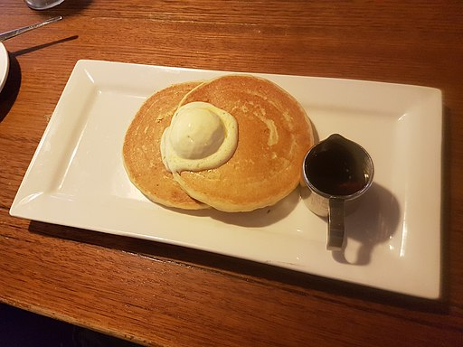

Pancakes

Description
A decent pancake with short and simple list of ingredients I'm likely to have on hand.
Ingredients
- 1 1/2 Cups flour
- 1 Tbsp baking powder
- 1 Tbsp sugar
- 1 Cup milk
- 3 Tbsp melted butter
- 1 tsp almond or vanilla extract
- 1 egg
Steps
- Add dry ingredients(flour, baking powder, sugar) to mixing bowl and combine.
- Crack egg into one of those big glass measuring cups with a spout.
Add milk, butter, and extract, stir to combine.
- Add wet ingredients to dry ingredients and stir just until lumps go away, don't overstir.
Add a little flour if consistency is too thin, or a little milk if ingredients too thick to combine.
Return batter to spout cup for easier pouring.
- Heat pan over medium heat, and pour batter. Flip once when beginning to brown (edges firm and bubbles stop). Remove when done.